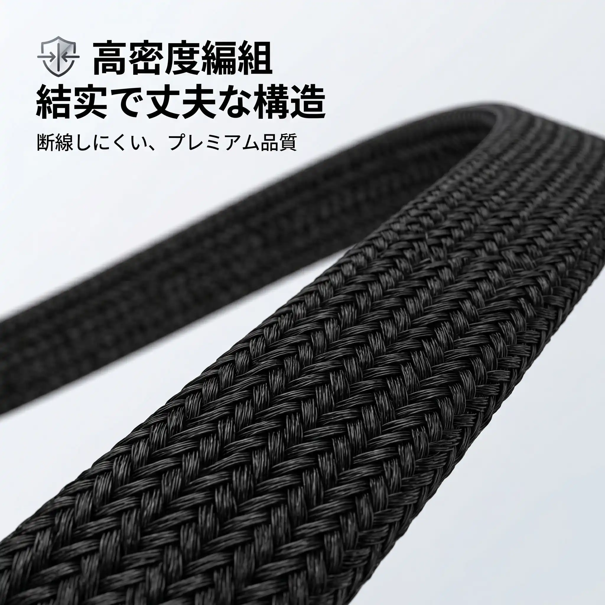
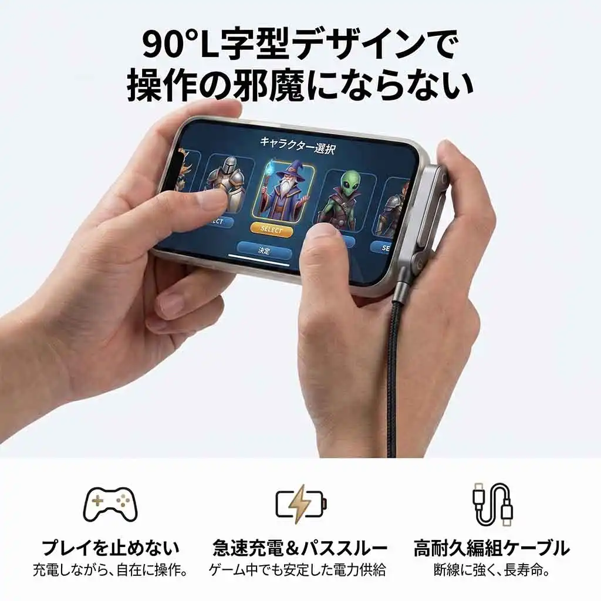

240W対応
対応する充電器とデバイスで最大240WのPower Delivery。
電源・充電
急速充電、安定したデータ転送、毎日の抜き差しに。FiberLine 02は必要な場所では強く、必要な場所ではしなやかです。
前へ進むために
信頼できるケーブルは、日常の中に自然に消えていくもの。デスクでもバッグでも、電力とデータを確実に届けます。
対応する充電器とデバイスで最大240WのPower Delivery。
柔らかなナイロン編みがきれいに曲がり、絡まりを抑えます。
充電と日常のUSB-Cデータ転送に対応する一本です。
両端のストレインリリーフが繰り返しの使用を支えます。
使用イメージ
デスク、モバイル、高出力充電など、さまざまな日常の場面で活躍するケーブルの写真です。






Field notes
ノートPC、タブレット、スマートフォン、充電器に使える日常の一本。
| コネクター | USB-C オス to USB-C オス |
|---|---|
| 給電 | 対応機器で最大240W |
| データ | 480Mbps |
| 外装 | ソフトタッチ仕上げのナイロン編み |
| 長さ | 1.5 m |
充電器とデバイスの構成をお知らせください。必要な電力を確認します。